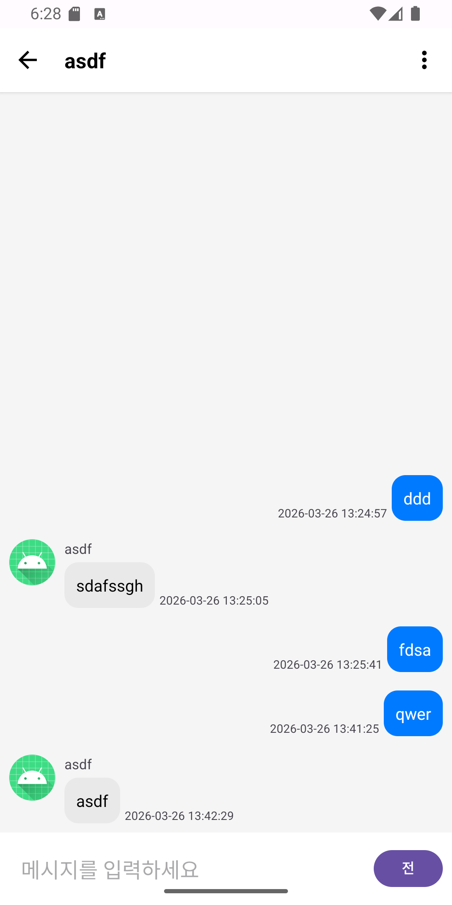
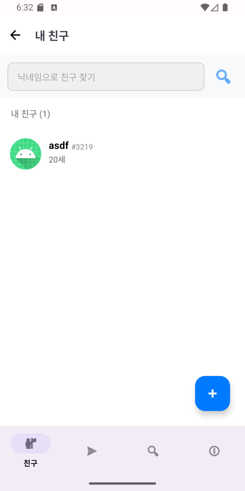
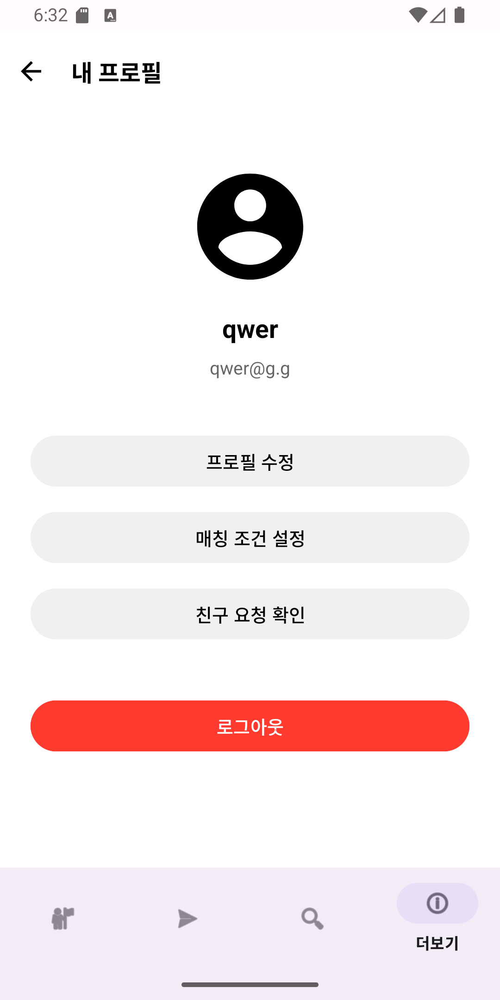
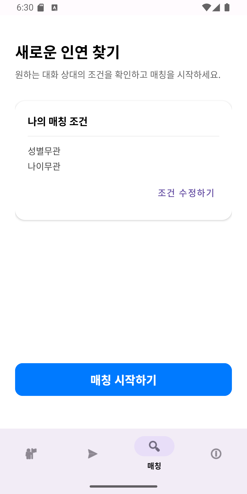
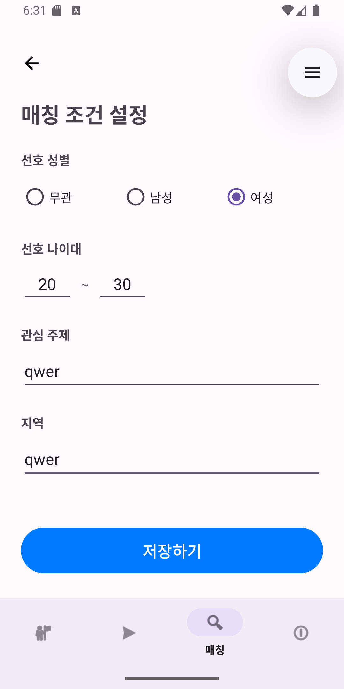
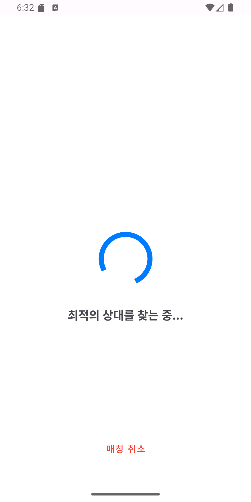
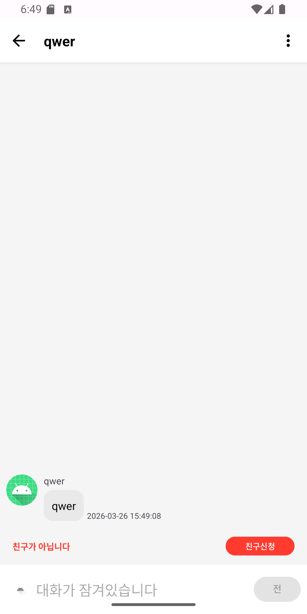
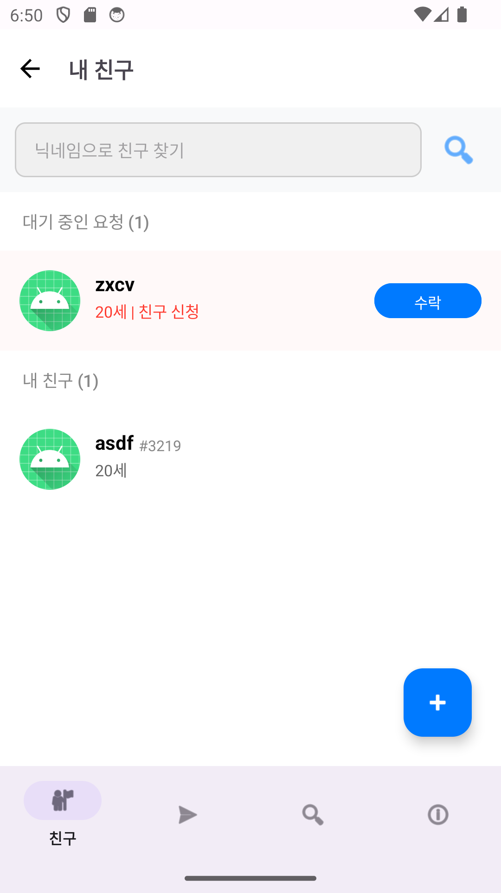

Chatzar (실시간 랜덤 채팅 플랫폼)
⚙️ Tech: Java 17, Spring Boot 3.x, Spring Security, WebSocket(STOMP), JPA, MySQL, JUnit5
프로젝트 개요
Chatzar는 보안성과 실시간성을 극대화한 채팅 서비스의 백엔드 시스템입니다.
닉네임#태그 시스템을 통한 고유 식별 체계를 구축하였으며, WebSocket 기반의 양방향 통신 환경에서
발생할 수 있는 보안 충돌 및 비동기 경주 상태(Race Condition) 문제를 해결하며 안정적인 인프라를 구축하는 데 집중했습니다.
주요 기능 (Key Features)
-
실시간 메시징 및 가용성 확보
WebSocket과 STOMP 프로토콜을 활용하여 전이중(Full-duplex) 통신 환경을 구축했습니다.
메시지 브로커를 통해 수만 명의 동시 접속자를 처리할 수 있는 인프라를 설계하였으며, ChannelInterceptor를 사용하여 연결 세션별 실시간 인증 및 권한 검증 로직을 구현했습니다.

-
고유 식별 시스템 (Discord Style)
사용자가 인식하는 닉네임과 시스템이 식별하는 고유 ID를 분리했습니다. 닉네임 중복을 허용하되 4자리 랜덤 태그를 부여하여 사용자를 고유하게 식별하며,
이를 통해 사용자 탐색의 편의성과 보안성을 동시에 확보했습니다.


-
전략적 매칭 및 관계 기반 보안 가드
사용자의 선호도(성별, 나이 등)를 반영한 동적 매칭 알고리즘을 구현했습니다. 특히, 상호 친구 수락(ACCEPTED) 상태가 아닐 경우 메시지 발신을 제한하는
**'Chat Lock'** 로직을 도입하여 스팸 메시지 차단 및 사용자 프라이버시를 보호했습니다.



- 관계 기반 보안 가드 (Chat Lock):
상호 친구 수락(ACCEPTED) 상태가 아닐 경우 메시지 발신을 제한하여 스팸 및 개인정보 노출 방지.


- JWT 기반 보안 아키텍처:
Access/Refresh Token 체계와 토큰 폐기(Revoke) 시스템을 통한 강력한 사용자 인증 및 인가.
트러블슈팅 (Troubleshooting)
🛡️ 보안 및 인증 시스템 고도화
- 테스트 환경 데이터 정합성 이슈: BCrypt 암호화 규격 미달로 인한 로그인 테스트 실패 ➡️ BCryptPasswordEncoder를 내장한 정적 테스트 픽스처(MemberFixture) 도입으로 해결.
- Refresh Token 무한 재사용 방지: 이미 사용된 리프레시 토큰의 보안 취약점 ➡️ DB 레벨에서 isUsed 상태 체크 및 예외 처리를 통해 토큰 재발급 로직 강화.
- Spring Security와 WebSocket 핸드쉐이크 충돌: JWT 필터가 웹소켓 초기 연결을 차단하는 문제 ➡️ 엔드포인트 개방 후 STOMP 인터셉터 기반의 2단계 인증 구조로 전환.
⚡ 성능 최적화 및 실시간 통신 안정화
- 검색 성능 및 사용자 식별성 개선: 중복 닉네임 과다 노출 문제 ➡️ 닉네임과 태그를 조합한 복합 인덱스(Composite Index) 활용 및 정확한 1인 타겟팅 검색 로직 구현.
- 비동기 환경에서의 경주 상태(Race Condition): 웹소켓 연결 완료 전 구독 시도로 인한 앱 종료 ➡️ 상태 이벤트 기반의 지연 구독(Lazy Subscription) 패턴 적용으로 안정성 확보.
- 서버-클라이언트 데이터 규격 불일치: 필드명 차이 및 Null 전달 시 역직렬화 오류 ➡️ Jackson 매핑 규격 통일 및 방어적 코드(Default Value) 작성을 통한 시스템 견고함 증대.
링크
🔗 GitHub Repository 바로가기
← 메인 페이지로 돌아가기